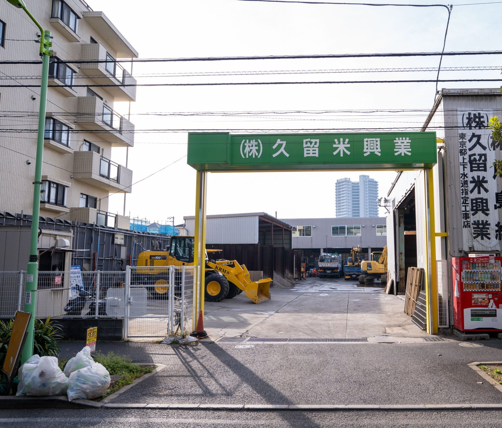

1974 / TODAY / NEXT
この街とともに、50年以上。
信頼をつなぎ、次の時代へ。
現場で道路と水道を守る仕事と、人を大切にする会社づくり。
SETAGAYA, TOKYO — SINCE 1974
OUR WORKS
- 01ガス管取替後の復旧舗装工事
- 02水道工事
- 03一般土木工事
- 04下水道工事
KEEP / CHANGE 守ること、変えること
守るために、
変えるという選択。
現場の仕事は、昔も今も街に欠かせない。だからこそ、働き方は今の時代に合わせて見直してきました。

一つひとつの現場に、
責任を持つ。
道路を元の状態に戻し、街の暮らしを支える仕事を続けていきます。

一人に負担を
集中させない。
勤務時間や人員配置を見直し、続けられる働き方を整えています。

SINCE 1974 北烏山